In summary, this paper proposes a new watermark attack philosophy for all logit-based watermarks in LLMs. Our contributions are as follows:
- We propose a novel philosophy for watermark attacks that can effectively remove existing watermarks from text. This approach can be integrated with various traditional attack methods to enhance their performance.
- We find that the strength of overlapping watermarks impacts detection performance. Upstream and downstream watermarks generally compete for detection accuracy, with one being stronger and the other weaker.
- We discuss the vulnerability of watermarking techniques caused by watermark collisions.